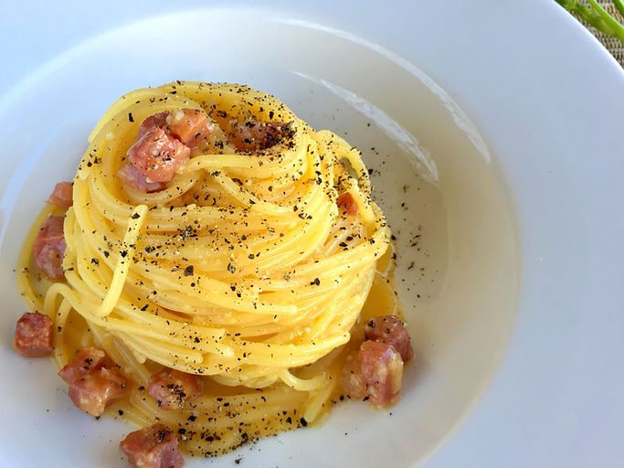

Spaghetti Alla Carbonara Tradizionali

Ingredients:
- 1 (14 ounce) package spaghetti
- 5 ounces guanciale (cured pork cheek), cut into small cubes
- 3 egg yolks
- 1 whole egg
- ¾ cup grated Pecorino-Romano cheese
- salt and freshly ground black pepper to taste
Directions:
- Fill a large pot with lightly salted water and bring to a rolling boil. Stir in spaghetti and return to a boil.Cook pasta uncovered, stirring occasionally,
until tender yet firm to the bite, about 12 minutes.
Reserve a little pasta water, then drain.
- Meanwhile, heat a skillet over medium heat; add guanciale, cook and stir until crisp, 5 to 10 minutes.
- Whisk egg yolks and whole egg together in a bowl; whisk in cheese, salt, and pepper until combined.
- Stir in guanciale. Add spaghetti; toss until evenly coated.